[7-1] ADC模数转换器 — 学习笔记
- 课程：江协科技《STM32入门教程-2023版 细致讲解 中文字幕》
- 视频：BV1th411z7sn?p=21，48:46（2926 秒）
- 素材：244 帧关键帧（每 12 秒，宽 1280px）+ PP-OCRv4 画面硬字幕 OCR（814 段）；关键截图 16 张随笔记收录（源图在
vidsum_out/stm32_p21/frames/，站内图片在assets/images/stm32-21/） - 字幕情况：该集 B 站没有 CC/AI 字幕，文本由画面烧录的中文字幕 OCR 得到（source=subtitle-ocr）；本集字幕里混入了 Keil 输出（
Flash Load finished at ...、Application running）和手册正文/页码噪声，这些不是老师口述内容，已剔除，错字已按画面校正（清单见文末「存疑」）。 - 本集定位：这是模块 7（ADC）的理论课——00:12–03:22 只演示两个已经写好的成品工程的现象（
7-1 AD单通道、7-2 AD多通道），03:24「接下来我们就来看一下 PPT」之后到 48:46 全是 PPT + 参考手册翻页，没有一行代码；片尾 48:42「我们下一小节来开始写代码」——代码在 P22 [7-2]。本集不写任何配置步骤与库函数（相关内容统一注明「在 P22」）。
一句话结论
ADC（Analog-Digital Converter，模数转换器）就是把引脚上连续变化的模拟电压，转换成内存里存储的数字变量——它是模拟电路到数字电路的桥梁：STM32 主要是数字电路，GPIO 只能读高/低两个电平，想知道引脚上到底「几 V」，就必须借助 ADC；转换一次得到一个数字量，读进变量后就能显示、判断、记录，所以 ADC 本质上就是一个「电压表」。本集要记的核心参数：12 位逐次逼近型、1us 转换时间（对应转换频率 1MHz）、输入 0～3.3V 对应结果 0～4095（线性）；18 个输入通道 = 16 个外部（GPIO 直接测）+ 2 个内部（温度传感器、内部参考电压 VREFINT≈1.2V）；两个转换单元——规则组最多 16 通道、注入组最多 4 通道，规则组只有 1 个数据寄存器（多通道会覆盖，所以要配 DMA 或及时读走）、注入组有 4 个；还有模拟看门狗自动监测电压范围（超阈值直接申请中断，省掉「不断读值再 if 判断」）。原理部分用外挂芯片 ADC0809 讲清逐次逼近：输入经多路开关选一路 → 比较器把待测电压和 DAC 输出比较 → SAR 从最高位开始试（8 位先试 128，比大了就减半试 64、32……这些数正好是二进制各位权），12 位就判断 12 次，最终得到的 DAC 输入数据就是待测电压的编码。在本芯片（C8T6）上还要注意三点：只有 ADC1、ADC2 两个 ADC，外部通道只有 10 个（ADC12_IN0～IN9 = PA0～PB1），ADCCLK 由 ADC 预分频器分频、最大 14MHz（72MHz 主频下 2/4 分频都超限，只能 6 分频 12MHz 或 8 分频 9MHz）。规则组有单次/连续 × 非扫描/扫描 4 种转换模式，转换时间 TCONV = 采样时间 + 12.5 个 ADC 周期。代码在下一集 P22 [7-2]。
0. 本集定位：理论课，代码在 [7-2] P22
- 本集是纯理论课：片头 3 分钟只演示两个成品工程的现象，03:24 起回 PPT；全程没有打开 Keil 写代码、没有编译下载。
- 片头两个成品工程：①
7-1 AD单通道——电位器产生 0～3.3V 可调电压接 PA0，OLED 第一行显示 AD 原始值、第二行显示换算后的电压；②7-2 AD多通道——再装光敏电阻、热敏电阻、反射红外模块，AO 分别接 PA1、PA2、PA3，加上电位器共 4 路，屏幕显示AD0～AD3。 - 片尾明确预告代码在下一集：48:42「我们下一小节来开始写代码」——代码在 P22 [7-2]（这两个工程正是下一集要写的）。
- 本集不写配置代码：本集没有出现任何初始化结构体、库函数、寄存器写入演示，只翻了手册的寄存器章节做导读；所以本笔记不写配置步骤和库函数名，一律注明「在 P22」。视频里唯一顺口提到的「开关控制（给 ADC 上电）」也只作原理，不写函数。
1. 片头现象：AD 单通道与 AD 多通道
1.1 AD 单通道：电位器 → PA0
- 面包板上接了一个电位器（滑动变阻器），用它产生一个 0～3.3V 连续变化的模拟电压信号，接到 STM32 的 PA0 口上；
- 用 STM32 内部的 ADC 读取电压数据，显示在屏幕上：第一行是 AD 转换后的原始数据，第二行是经过处理后的实际电压值；
- 拧电位器：往左拧，AD 值减小、电压值也减小——AD 值最小是 0，对应电压 0V；往右拧，AD 值变大、电压值也变大；
- STM32 的 ADC 是 12 位的，所以 AD 结果最大值是 4095（2^12-1），对应的电压是 3.3V。
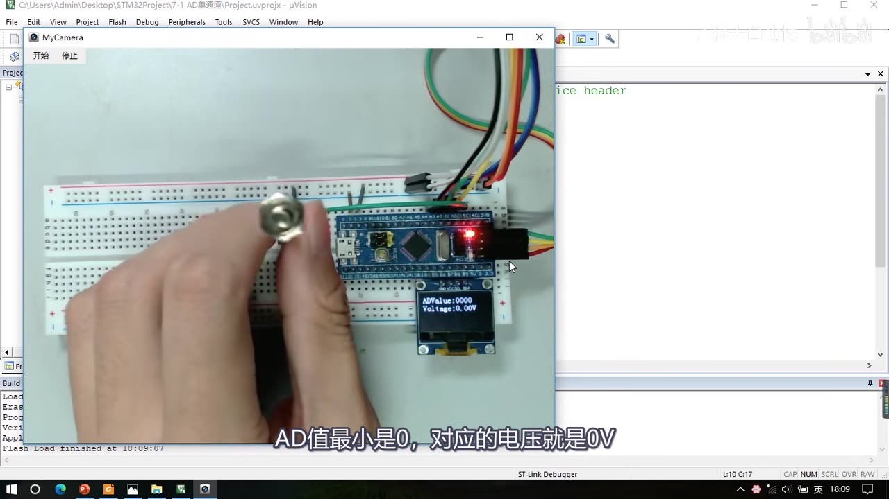
图 1：AD 单通道现象——工程标题栏 7-1 AD单通道，面包板上是电位器与 STM32 最小系统板，OLED 显示 ADValue:00000 与 Voltage:0.00V；字幕「AD值最小是0，对应的电压就是0V」
1.2 AD 多通道：4 路传感器
- 第二个工程又接了 3 个传感器模块：光敏电阻、热敏电阻、反射红外模块，把它们的 AO（模拟电压输出端）分别接在 PA1、PA2、PA3 引脚；加上刚才的电位器，总共 4 个模拟通道，测出的 4 个 AD 数据分别显示在屏幕上（
AD0～AD3）； - 演示现象：电位器看第一行
AD0，往左拧减小、往右拧增大（和单通道一样）； - 光敏电阻看
AD1：遮挡光敏电阻 → 光线减小 → AD 值增大；移开 → 光线增大 → AD 值减小； - 热敏电阻看
AD2：用手热一下 → 温度升高 → AD 值减小；移开 → 温度降低 → AD 值增大； - 反射红外看
AD3：手靠近 → 有反光 → AD 值减小；移开 → 没有反光 → AD 值增大。
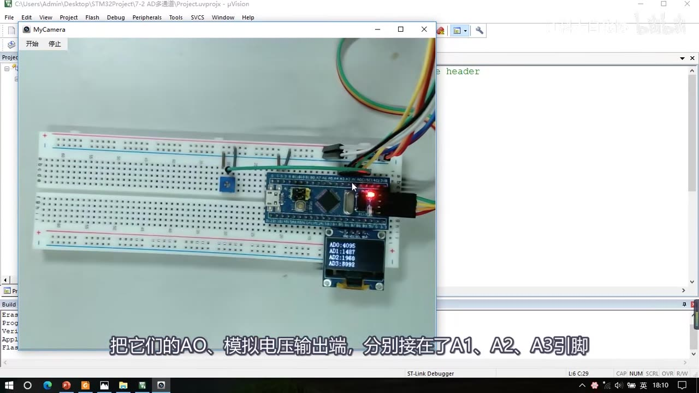
图 2：AD 多通道现象——工程 7-2 AD多通道，OLED 显示 AD0:4095、AD1:1487、AD2:1968、AD3:0993（4 路传感器同时显示）；字幕「把它们的AO、模拟电压输出端，分别接在了A1、A2、A3引脚」
1.3 ADC 的意义：GPIO 只能读高低电平
- 对于 GPIO，它只能读取引脚的高低电平——要么是高电平、要么是低电平，只有两个值；
- 而使用了 ADC 之后，就可以对这个高电平和低电平之间的任意电压进行量化，最终用一个变量来表示；读取这个变量，就能知道引脚的具体电压到底是多少；
- 所以 ADC 其实就是一个电压表：把引脚的电压值测出来、放在一个变量里——这就是 ADC 的作用。
2. ADC 简介
2.1 定义与桥梁作用
- ADC（Analog-Digital Converter）模拟-数字转换器，简称模数转换器，或者叫 AD 转换器；
- 「ADC 可以将引脚上连续变化的模拟电压转换为内存中存储的数字变量，建立模拟电路到数字电路的桥梁。」
- 为什么需要它：STM32 主要是数字电路，数字电路只有高低电平、没有「几 V 电压」的概念，所以如果想读取电压值，就需要借助 ADC；ADC 读取引脚上的模拟电压、转换为一个数据存在寄存器里，我们再把数据读到变量里，就可以进行显示、判断、记录等操作。
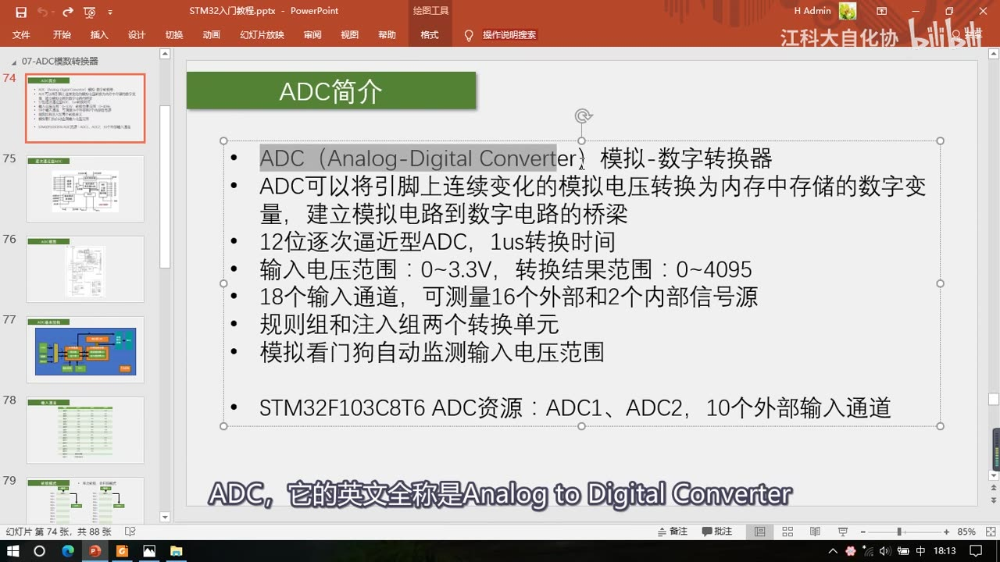
图 3：PPT「ADC简介」——ADC（Analog-Digital Converter）模拟-数字转换器；可将引脚上连续变化的模拟电压转换为内存中存储的数字变量，建立模拟电路到数字电路的桥梁；12 位逐次逼近型 ADC、1us 转换时间；输入电压范围 0～3.3V、转换结果范围 0～4095；18 个输入通道（16 外部 + 2 内部）；规则组和注入组两个转换单元；模拟看门狗自动监测输入电压范围；STM32F103C8T6 ADC 资源：ADC1、ADC2，10 个外部输入通道；字幕「ADC，它的英文全称是Analog to Digital Converter」
2.2 与 DAC / PWM 的对比（顺带了解）
- 有「模拟到数字」的桥梁，就有「数字到模拟」的桥梁——那就是 DAC（数字模拟转换器），用 DAC 可以把数字变量转化为模拟电压；
- 但在上一节（P16 PWM）我们已经学过一个数字到模拟的桥梁：用 PWM 控制 LED 亮度、电机速度——在这两种状态（全开/全关）上都没有功率损耗，所以在直流电机调速这种大功率应用场景，用 PWM 等效模拟量比 DAC 更好，而且 PWM 电路更简单、更常用；
- 所以 PWM 挤占了 DAC 的很多应用空间，目前 DAC 主要用于波形生成领域（信号发生器、音频解码芯片等），这些领域 PWM 不好替代。
2.3 关键参数逐条看
- 12 位、逐次逼近型、1us 转换时间：
- 12 位表示量化结果的范围是 0～4095（2^12-1）——位数越高，量化结果越精细，对应分辨率就越高；
- 转换时间：从开始到产生结果需要 1us，对应 AD 转换频率 1MHz——这是 STM32 ADC 的最快转换频率。要转换频率非常高的信号就要考虑够不够用；信号频率比较低时 1MHz 完全够用。
- 输入电压范围 0～3.3V，转换结果 0～4095：ADC 的输入电压一般要求在芯片供电的负极和正极之间变化——最低 0V（负极）、最高 3.3V（正极）；转换后最小值 0、最大值 4095，0V 对应 0、3.3V 对应 4095，中间是一一对应的线性关系——换算就是乘除一个系数。
- 18 个输入通道 = 16 个外部 + 2 个内部信号源：
- 外部信号源就是 16 个 GPIO，引脚上直接接模拟信号就行，不需要任何额外的电路，引脚直接能测电压（很方便）；
- 2 个内部信号源：内部温度传感器（可以测量 CPU 的温度，比如电脑显示 CPU 温度就是这个思路）和内部参考电压 VREFINT（一个 1.2V 左右的基准电压，不随外部供电电压变化——所以如果芯片供电不是标准 3.3V、测外部引脚电压可能不准，就可以用这个基准来校正）。
- 规则组和注入组两个转换单元（STM32 ADC 的增强功能）：普通 AD 转换是「启动一次转换、读一次值，再启动、再读值」；STM32 的 ADC 可以列一个组、一次性启动一个组、连续转换多个值——规则组用于常规使用、注入组用于突发事件（下一章框图细讲）。
- 模拟看门狗自动监测输入电压范围：ADC 常用来测光线强度、温度这些量，常要判断「高于某阈值/低于某阈值就执行操作」；模拟看门狗可以监测指定的某些通道，当 AD 值高于设定的上阈值或低于下阈值时申请中断，你就能在中断里执行操作——不用不断手动读值再用 if 判断（可以了解一下）。
- C8T6 的资源：ADC1、ADC2 两个 ADC 外设；前面说的 16 个外部信号源是这个系列最多的数量，本芯片引脚少，很多引脚没引出来，所以只有 10 个外部信号源——想要更多通道就选引脚更多的型号，具体看数据手册。
3. 逐次逼近型 ADC 的原理（ADC0809）
STM32 的手册里只画了一个框表示 ADC、没有描述内部结构，所以先看一个独立的、结构完整的芯片 ADC0809（经典 8 位逐次逼近型 ADC）来理解原理——STM32 的 ADC 原理和它一样。
3.1 结构：多路开关 + 比较器 + DAC + SAR
- 以前单片机性能不强，需要外挂一个 ADC 芯片才能做 AD 转换（ADC0809 就是一款比较经典的芯片）；现在很多单片机内部已经集成了 ADC 外设，不用外挂、引脚直接测电压。
- 左边 IN0～IN7 是 8 路输入通道，通过通道选择开关选中一路、输入到后面进行转换；
- 下面地址锁存和译码：想选中哪个通道，就把通道号放在 ADDA/ADDB/ADDC 三个脚上，再用 ALE 锁存——这部分相当于一个可以通过模拟信号的数据选择器；因为 ADC 转换是一个很快的过程（给个开始信号、过几个 us 就完成），所以只需要一个 AD 转换器 + 一个多路选择开关就够了。
- ADC0809 只有 8 个输入通道，STM32 内部 ADC 有 18 个输入通道——对应过来就是一个 18 路输入的多路开关。
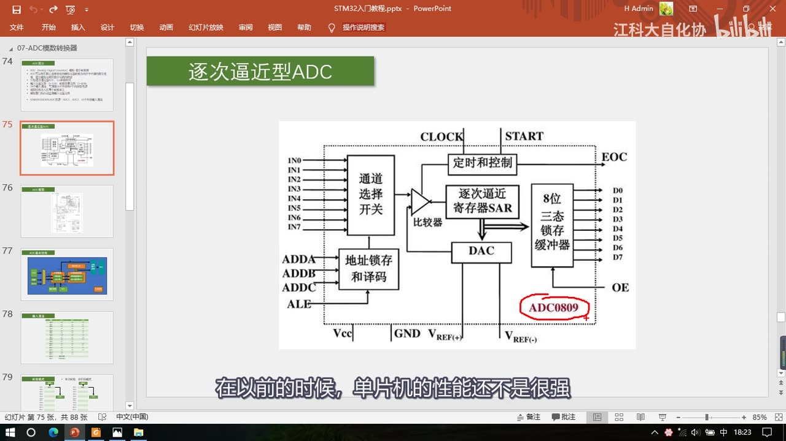
图 4：PPT「逐次逼近型ADC」——ADC0809 内部结构：左侧 IN0～IN7 八路输入 → 通道选择开关；下方 ADDA/ADDB/ADDC + ALE 地址锁存和译码；中间电压比较器、逐次逼近寄存器 SAR、DAC；右侧 8 位三态锁存缓冲器输出 D0～D7、OE；上方 CLOCK/START，右侧 EOC；下方 Vcc/GND/VREF+/VREF-，红圈标出 ADC0809；字幕「在以前的时候，单片机的性能还不是很强」
3.2 逐次逼近的过程：从最高位开始试
- 输入信号选好之后，怎么知道这个电压对应的编码数据是多少？用逐次逼近的方法一一比较：电压比较器可以判断两个输入信号电压的大小关系（输出高低电平指示谁大谁小），它的两个输入端——一个是待测电压，另一个是 DAC 的电压输出端；
- DAC 是数模转换器：给它一个数据，它就输出该数据对应的电压（内部用加权电阻网络实现，这里不细说）；
- 于是我们有了一个外部通道输入的、未知编码的电压，和一个 DAC 输出的、已知编码的电压，两者同时进比较器判断大小：如果 DAC 输出电压比较小，就增大 DAC 数据；直到 DAC 输出的电压和外部通道输入的电压近似相等——这时 DAC 输入的数据就是外部电压的编码数据；
- 这个电压调节过程由逐次逼近寄存器 SAR 完成：比如 8 位 ADC 编码是 0～255，第一次比较给 DAC 输入 255 的一半，即 128，看谁大谁小；如果 DAC 电压大了就减半试 64，再大就试 32……依次进行下去，就能最快地找到未知电压的编码；
- 用二进制看：128、64、32 这些数据正好是二进制每一位的位权——这个判断过程就相当于对二进制从高位到低位依次判断是 1 还是 0，这就是「逐次逼近型」名字的来源；12 位 ADC 就需要依次判断 12 次。
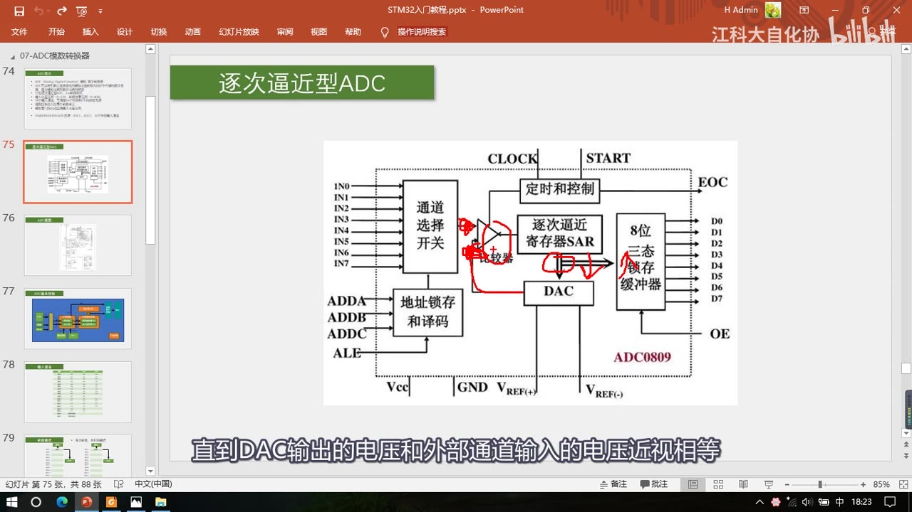
图 5：同一张 ADC0809 结构图上，红圈标出「比较器」和「DAC」及二者之间的连线；字幕「直到DAC输出的电压和外部通道输入的电压近似相等」
3.3 外围信号：EOC / START / CLOCK / VREF
- 输出：通过右侧输出，8 位就有 8 根线、12 位就有 12 根线（三态锁存缓冲器 + OE 控制）；
- EOC = End Of Convert，转换结束信号；START 是开始转换，给一个输入脉冲就开始；CLOCK 是 ADC 时钟——因为 ADC 内部是一步一步进行判断的，需要时钟来推动这个过程；
- VREF+ 和 VREF- 是 DAC 的参考电压：比如给一个数据 255，对应 5V 还是 3.3V 就由参考电压决定——这个参考电压也决定了 ADC 的输入范围，所以它也是 ADC 的参考电压；
- 最后左侧的VCC 和 GND 是整个芯片电路的供电；通常参考电压的正极和 VCC 是一样的、接在一起，参考电压的负极和 GND 也一样接在一起。
4. STM32 的 ADC 框图
手册里每个外设最前面都有一个整体结构图，这个结构图非常重要，需要多花点时间看。
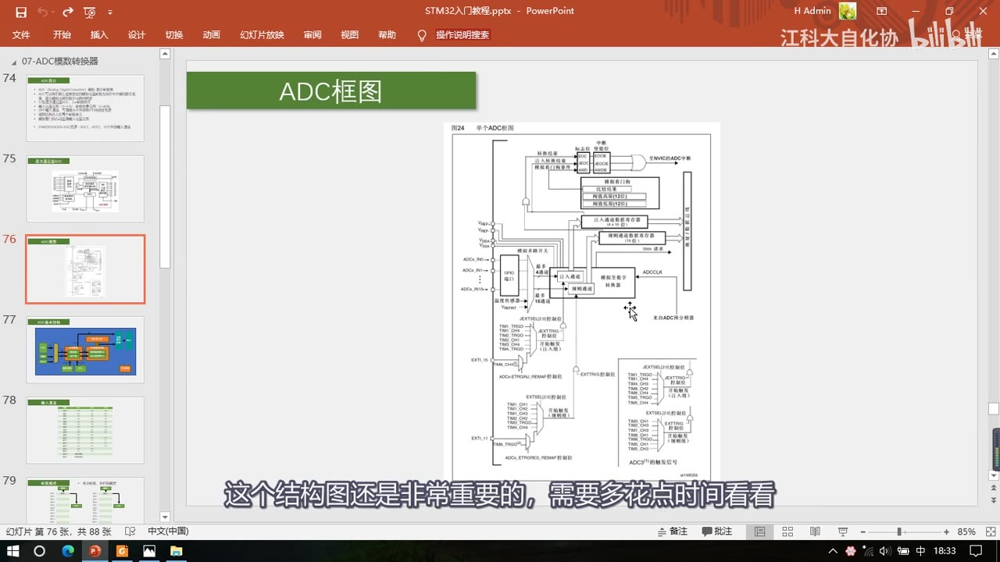
图 6：PPT「ADC框图」——手册「图24 单个ADC框图」全貌：左侧 ADCx_IN0～IN15 与 GPIO 端口、温度传感器、VREFINT 进模拟多路开关；右侧模数转换器（规则通道/注入通道）→ 规则/注入数据寄存器；另有触发控制 EXTSEL/JEXTSEL、来自 ADC 预分频器的 ADCCLK、DMA 请求、模拟看门狗（阈值高限/低限）、EOC/JEOC 到 NVIC、开关控制；字幕「这个结构图还是非常重要的，需要多花点时间看看」
4.1 输入与转换部分
- 左侧是输入通道：ADCx_IN0～IN15（16 个外部通道，经 GPIO 端口进来）加两个内部通道——内部温度传感器和 VREFINT（内部参考电压）；它们都进模拟多路开关，选择一路送到模数转换器；
- 模数转换器执行的就是前面讲过的逐次比较过程；转换结果放在数据寄存器里，读寄存器就能知道结果；
- STM32 更高级的地方：它可以同时选中多个通道——规则组可以一次性最多选中 16 个通道、注入组最多可以选中 4 个通道（像去餐厅点菜：普通 ADC 是指定一个菜、老板做好送给你；这里是递一个菜单，菜单最多填 16 个菜，效率大大提高；菜单只写一个菜时就退化成普通模式）。
4.2 规则组与注入组的数据寄存器
- 规则组可以同时转换 16 个通道，但只有一个数据寄存器——「桌子比较小、最多只能放一个菜」：如果上 16 个菜，前 15 个都会被挤掉，你只能得到第 16 个菜；
- 解决：用 DMA 数据转运——「DMA 是一个数据转运小帮手，它可以在每上一个菜之后把这个菜挪到其他地方去，防止被覆盖」（DMA 下一节讲，这里先了解一下）。所以规则组要配 DMA 转运，才不用担心数据覆盖；
- 注入组比较高级（相当于餐厅的 VIP 座位）：一次最多点 4 个菜，而且数据寄存器有 4 个，可以同时放下，不用担心数据覆盖；
- 一般情况下用规则组就够了，要用规则组的菜单就配合 DMA 转运数据；注入组涉及的不多，老师后面只讲规则组的操作。
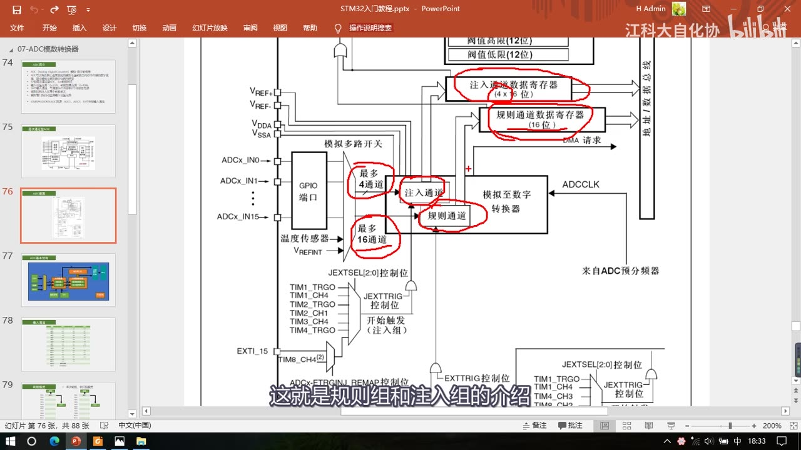
图 7：框图局部放大 + 红圈——「注入通道数据寄存器（4×16 位）」「规则通道数据寄存器（16 位）」、「最多 4 通道」标注在注入通道、「最多 16 通道」标注在规则通道，还有 JEXTSEL 和 EXTSEL 的 2:0 位 触发控制、DMA 请求、来自 ADC 预分频器的 ADCCLK；字幕「这就是规则组和注入组的介绍」
4.3 触发转换：软件触发与硬件触发
- 框图左下角是触发转换部分（就是 START 信号）：触发 ADC 开始转换的信号有两种——软件触发（软件控制位）和硬件触发（框图里那些触发源）；
- 触发源主要来自定时器，上面那些是注入组的触发源、下面那些是规则组的触发源（定时器可以通向 ADC、DAC 这些外设用于触发转换，前面讲定时器时介绍过）；
- 为什么要用定时器触发：ADC 经常需要每隔一个固定时间段转换一次（比如每隔 1ms）。正常思路是用定时器每隔 1ms 申请一次中断、在中断里手动开始转换——但频繁进中断会影响主程序执行（不同中断优先级不同还可能导致某些中断不能及时响应，ADC 转换频率就受影响）；所以一般都有硬件支持：给 TIM3 定个 1ms 的时间，并把 TIM3 的更新事件选择为 TRGO 输出去触发 ADC，整个过程不需要进中断，节省了中断资源；
- 另外也可以选择外部中断引脚来触发转换，都可以在程序里配置。
4.4 参考电压与供电
- 左下角还有 VREF+、VREF-、VDDA、VSSA：上面两个是 ADC 的参考电压，决定了 ADC 输入电压的范围；下面两个是 ADC 的供电引脚；
- 一般情况下 VREF+ 要接 VDDA、VREF- 要接 VSSA；在我们这个芯片上，没有 VREF+/VREF- 引脚，内部已经和 VDDA/VSSA 接在一起了；
- VDDA 和 VSSA 是内部模拟部分的电源（比如 ADC、RC 振荡器、锁相环等）；这里 VDDA 接 3.3V、VSSA 接 GND，所以 ADC 的输入电压范围就是 0～3.3V。
4.5 ADCCLK：ADC 时钟
- 框图右侧的 ADCCLK 就是 ADC 的时钟（ADC0809 里的 CLOCK），用于驱动内部逐次比较；
- ADCCLK 来自 ADC 预分频器，而这个 ADC 预分频器来源于 RCC：APB2 时钟 72MHz → ADC 预分频器 → ADCCLK；
- ADCCLK 最大是 14MHz，所以这个预分频器有点尴尬：它可以选择 2、4、6、8 分频——如果选 2 分频，72M/2=36M，超出允许范围；4 分频是 18M，也超了；所以 对 ADC 预分频器只能选择 6 分频（结果 12M）和 8 分频（结果 9M）这两个值，程序里要注意。
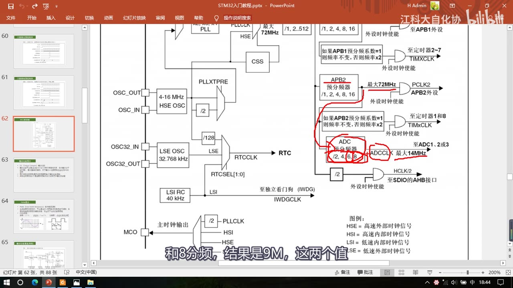
图 8：时钟树上的红圈——RCC 的「ADC 预分频器 /2、/4、/6、/8」→「ADCCLK 最大 14MHz」，上方是 APB2 预分频器与 72MHz 的 PCLK2；字幕「和8分频，结果是9M，这两个值」
4.6 数据寄存器、看门狗、中断与开关
- 上方有两个数据寄存器用于存放转换结果；还有模拟看门狗：里面可以存一个阈值高限和一个阈值低限——如果启动了模拟看门狗并指定了看门的通道，一旦超过这个阈值范围，就会申请一个模拟看门狗的中断（通向 NVIC）；
- 还有 EOC（规则组转换完成） 和 JEOC（注入组转换完成） 两个信号：会在状态寄存器里置标志位，这两个标志位也可以通向 NVIC 申请中断（开启 NVIC 对应通道就会触发中断）；
- 右下角是开关控制：给 ADC 上电的开关（在库函数里对应的写法在 P22，本集不展开）。
4.7 作者总结的「ADC 基本结构图」
把框图简化后的结构：左边是输入通道（16 个 GPIO 口 + 两个内部通道）→ 进入 AD 转换器（里面分规则组和注入组：规则组最多选 16 个通道、注入组最多选 4 个）→ 转换结果存放在 AD 数据寄存器（规则组 1 个、注入组 4 个）；下面有触发控制提供 START 信号（可选软件触发/硬件触发，硬件主要来自定时器，也可以选外部中断引脚）；右边是来自 RCC 的 ADC 时钟（逐次比较由它推动）；上面可以布置模拟看门狗监测转换结果范围，超范围就经中断输出控制向 NVIC 申请中断；规则组和注入组转换完成后有 EOC 信号置标志位、也可以通向 NVIC；右下角还有开关控制（给 ADC 上电）。
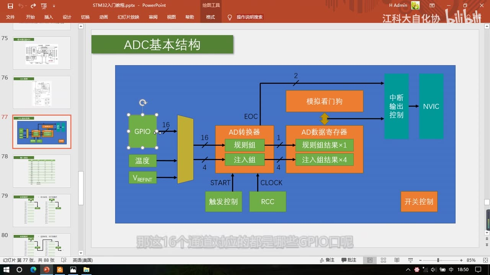
图 9：PPT「ADC基本结构」——作者总结的结构图：左侧 GPIO（16）、温度传感器、VREFINT 汇入多路开关；中间「AD转换器」含规则组（最多 16）与注入组（最多 4）；右侧 AD 数据寄存器「规则组结果×1」「注入组结果×4」；下方触发控制提供 START、RCC 提供 CLOCK；上方模拟看门狗 → 中断输出控制 → NVIC；右下角开关控制；字幕「那这16个通道对应的都是哪些GPIO口呢」
5. 输入通道与引脚映射
- 16 个外部通道分别对应哪些 GPIO？看手册的通道表（也可以对照引脚定义表看）：ADC12_IN0 对应 PA0、IN1 对应 PA1，依次 IN2、IN3、IN4、IN5、IN6、IN7 对应 PA2～PA7、IN8 对应 PB0、IN9 对应 PB1；
- 本芯片只有 IN0～IN9 共 10 个通道，其他地方就没有了，所以这个芯片只能有 10 个外部输入通道；
- 命名 ADC12_IN0 的意思是：ADC1 和 ADC2 的 IN0 都在 PA0 上——ADC1 和 ADC2 的引脚完全相同（表格里全是 ADC12）；ADC3 的引脚中间会有些变化，但我们这个芯片没有 ADC3，不用管；
- 通道 0～17 共 18 个通道：通道 16 对应 ADC1 的温度传感器、通道 17 对应 ADC1 的内部参考电压——只有 ADC1 有通道 16 和 17，ADC2、ADC3 没有；
- 由于 C8T6 没有 PC0～PC5，通道表里对应的那些通道也就没有了。
| 通道 | 引脚 | 通道 | 引脚 |
|---|---|---|---|
| ADC12_IN0 | PA0 | ADC12_IN5 | PA5 |
| ADC12_IN1 | PA1 | ADC12_IN6 | PA6 |
| ADC12_IN2 | PA2 | ADC12_IN7 | PA7 |
| ADC12_IN3 | PA3 | ADC12_IN8 | PB0 |
| ADC12_IN4 | PA4 | ADC12_IN9 | PB1 |
| ADC12_IN16 | 内部温度传感器（仅 ADC1） | ADC12_IN17 | 内部参考电压 VREFINT（仅 ADC1） |
- 双 ADC 模式（了解即可）：既然 ADC1 和 ADC2 引脚都相同，ADC2 还有什么用？——双 ADC 模式就是 ADC1 和 ADC2 一起工作，可以配合组成同步模式、交叉模式等；比如交叉模式下 ADC1 和 ADC2 交叉地对同一个通道采样，可以进一步提高采样率（「就像打拳，左手打一拳、右手打一拳，打击频率肯定比一个拳头快」）；当然 ADC1 和 ADC2 也可以分开使用，分别对不同引脚采样。这个模式比较复杂，只简单介绍、不需要掌握。
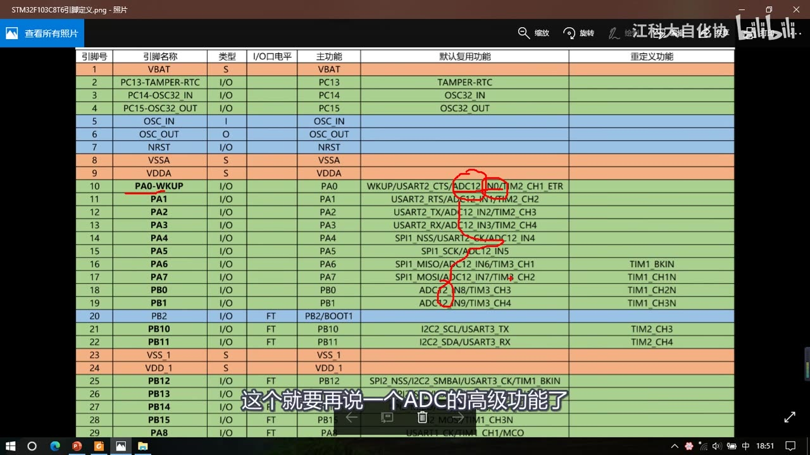
图 10：引脚定义表（STM32F103C8T6引脚定义）——红圈标出第 10～19 行的 ADC12_IN0～ADC12_IN9，对应引脚名 PA0、PA1……PA7、PB0、PB1；字幕「这个就要再说一个ADC的高级功能了」
6. 规则组的 4 种转换模式
ADC 初始化的结构体里有两个参数：一个选择单次转换还是连续转换，另一个选择扫描模式还是非扫描模式——组合起来就是 4 种转换方式。
6.1 单次转换、非扫描模式（最简单）
- 规则组里有一个菜单列表：16 个空位，分别是序列 1 到序列 16，可以在这里「点菜」——填入要转换的通道；
- 非扫描时，「菜单同时选中一组」就退化为「只选中一个」：在序列 1 的位置指定想转换的通道（比如通道 2）；
- 触发转换后，ADC 对这个通道做模数转换，过一小段时间转换完成——结果放在数据寄存器里，同时给 EOC 标志位置 1，整个过程结束；判断 EOC 标志位，转换完了就可以去数据寄存器读结果；
- 想再启动一次转换，就再触发一次（转换结束、置 EOC、读结果）；想换通道，就在转换前把序列 1 的通道号改掉再启动。这个模式没用到菜单列表，比较简单。
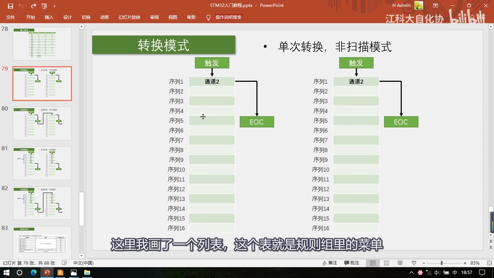
图 11：PPT「转换模式·单次转换，非扫描模式」——左右两张相同的序列列表（序列 1～序列 16），序列 1 填「通道 2」，触发箭头指向通道 2、再指向 EOC；字幕「这里我画了一个列表，这个表就是规则组里的菜单」
6.2 连续转换、非扫描模式
- 与上面不同的是：一次转换结束后不会停止，而是自动开始下一次——所以只需要最开始触发一次，之后就可以一直转换；
- 好处：开始之后不需要等待一段时间的启动、也不需要判断是否结束，想读 AD 值时直接从数据寄存器取就是了（得到的总是最新值）。
6.3 单次转换、扫描模式
- 单次转换：每触发一次，转换结束后就会停下来，下次转换得再触发；
- 扫描模式：会用到菜单列表——比如第一个菜是通道 2、第二个是通道 5……每个位置是通道几可以任意指定，也可以重复；
- 因为 16 个位置可以不用完，所以要再给一个**「通道数目」参数**告诉它有几个通道：比如通道数目指定为 7，它就只看前 7 个位置（序列 1～7 = 通道 2、5、4、1、0、3、6），每次触发之后依次对这 7 个位置做 AD 转换；
- 转换结果都放在同一个数据寄存器里，为了防止数据被覆盖，需要 DMA 及时把数据挪走；7 个通道转换完成后产生 EOC 信号，转换结束，再触发下一次就开始新一轮。
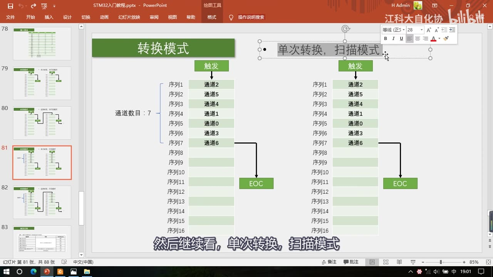
图 12：PPT「转换模式·单次转换，扫描模式」——左侧蓝色括号标出「通道数目：7」，序列 1～7 依次填通道 2、5、4、1、0、3、6，转换完指向 EOC；字幕「然后继续看，单次转换，扫描模式」
6.4 连续转换、扫描模式；以及间断模式
- 连续转换、扫描模式：在 6.3 的基础上改一点——一次转换完成后立刻开始下一次转换（和非扫描模式里「单次 vs 连续」是一个套路）；
- 间断模式（了解即可，不要求掌握）：在扫描模式下还可以用间断模式——每转换几个通道就暂停、需再次触发才能继续（这样模式太多了，PPT 没画出来）。
7. 触发控制：规则组的外部触发源
- 表64「ADC1 和 ADC2 用于规则通道的外部触发」列出规则组的触发源，可通过
EXTSEL[2:0]选择：
| 触发源 | 类型 | EXTSEL[2:0] |
|---|---|---|
| TIM1_CC1 事件 | 来自片上定时器的内部信号 | 000 |
| TIM1_CC2 事件 | 来自片上定时器的内部信号 | 001 |
| TIM1_CC3 事件 | 来自片上定时器的内部信号 | 010 |
| TIM2_CC2 事件 | 来自片上定时器的内部信号 | 011 |
| TIM3_TRGO 事件 | 来自片上定时器的内部信号 | 100 |
| TIM4_CC4 事件 | 来自片上定时器的内部信号 | 101 |
| EXTI 线11 / TIM8_TRGO 事件 | 外部引脚/来自片上定时器的内部信号 | 110 |
| SWSTART | 软件控制位 | 111 |
- 具体是引脚还是定时器，需要用 AFIO 重映射来确定；最后一个是软件控制位（软件触发）；
- 这些触发信号怎么选，通过设置右边这个寄存器来完成（用库函数的话直接给一个参数就行，写法在 P22）。
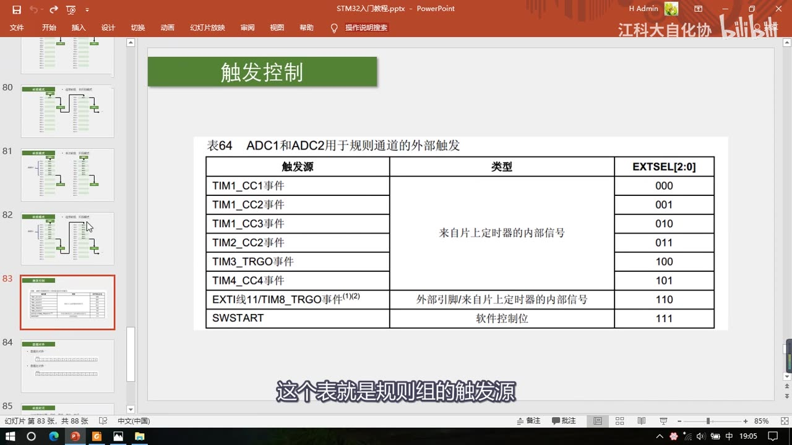
图 13：PPT「触发控制」——表64「ADC1和ADC2用于规则通道的外部触发」：TIM1_CC1(000)、TIM1_CC2(001)、TIM1_CC3(010)、TIM2_CC2(011)、TIM3_TRGO(100)、TIM4_CC4(101)、EXTI线11/TIM8_TRGO(110)、SWSTART(111)，中间一列是触发源类型；字幕「这个表就是规则组的触发源」
8. 数据对齐
- 转换结果是 12 位，而数据寄存器是 16 位的，所以就存在数据对齐问题：
- 数据右对齐：12 位数据向右靠、高位多出来的几位补 0（
0 0 0 0 D11…D0）——直接读出来就是结果； - 数据左对齐：12 位数据向左靠（
D11…D0 0 0 0 0）——相当于把结果左移 4 位（×16），直接读会比真实值大 16 倍；取高 8 位可以退化成 8 位 ADC 来用；
- 数据右对齐：12 位数据向右靠、高位多出来的几位补 0（
- 一般用右对齐。
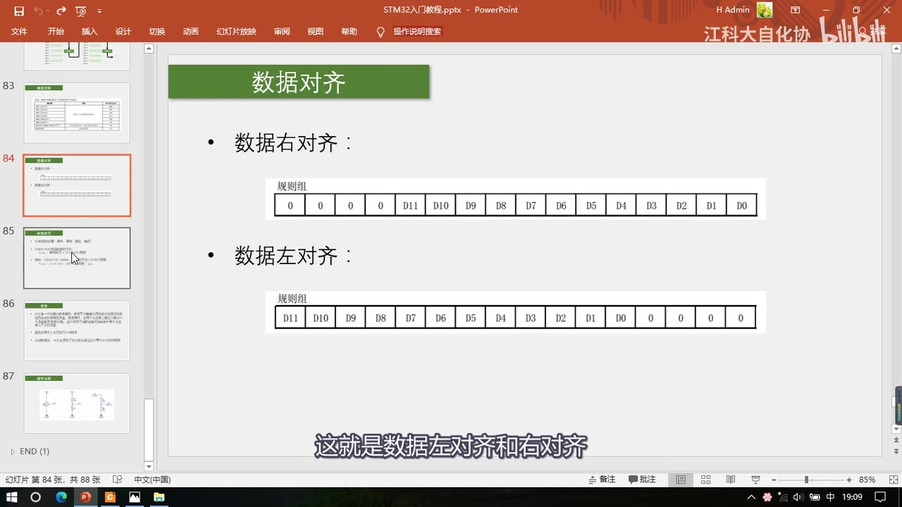
图 14：PPT「数据对齐」——规则组的 16 位数据寄存器示意：右对齐为 0 0 0 0 D11 D10 … D1 D0，左对齐为 D11 D10 … D1 D0 0 0 0 0；字幕「这就是数据左对齐和右对齐」
9. 转换时间与采样时间
- AD 转换的步骤：采样、保持、量化、编码；
- STM32 ADC 的总转换时间：TCONV = 采样时间 + 12.5 个 ADC 周期——其中 12 位量化占 12 个周期，另外 0.5 个周期老师说是「可能是做其他一些东西花的时间」（本集没有给权威解释）；
- 例如：当 ADCCLK = 14MHz、采样时间为 1.5 个 ADC 周期时，TCONV = 1.5 + 12.5 = 14 个 ADC 周期 = 1us——这就是前面「1us 转换时间」的来历；
- 采样时间越长越抗毛刺，但转换更慢；如果不需要非常高速的转换频率，转换时间就可以忽略；
- ADCCLK 超过 14MHz 属于超频：转换更快，但不保证稳定；
- 另外讲了采样保持电路：采样开关 + 电容——采样阶段把电压存到电容上，量化期间电压保持不变。
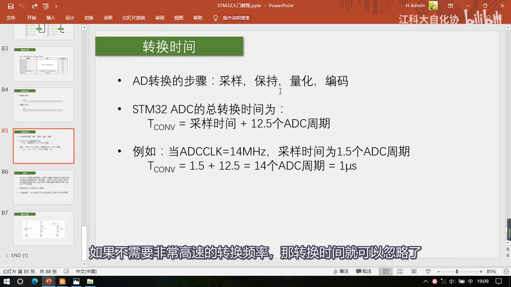
图 15：PPT「转换时间」——AD 转换的步骤：采样、保持、量化、编码；STM32 ADC 总转换时间 TCONV = 采样时间 + 12.5 个 ADC 周期；例如 ADCCLK=14MHz、采样时间 1.5 个 ADC 周期 → TCONV = 1.5 + 12.5 = 14 个 ADC 周期 = 1us；字幕「如果不需要非常高速的转换频率，那转换时间就可以忽略了」
10. 校准与硬件电路
10.1 校准
- STM32 ADC 内置自校准功能，用来减小内部电容组带来的误差；建议每次上电后执行一次校准；
- 启动校准前，ADC 必须关电超过至少两个 ADC 时钟周期（这是手册的要求，具体写法在 P22）。
10.2 三种常见硬件电路
ADC 的外围电路怎么设计？PPT 给了三个典型电路：
- 电位器分压：电位器 RP1 = 10K，两端接 3V3 和 GND，滑动端输出 → PA0，输出 0～3.3V 可调；电位器阻值别太小，至少 KΩ 级（例 10K）——太小会耗电大、发热；
- 传感器 + 固定电阻分压：传感器的等效可变电阻 N1 与固定电阻 R1 = 10K 串联分压，中点 → PA1；传感器阻值小 → 输出低、阻值大 → 输出高；固定电阻取与传感器相近的阻值（保证分压落在合适范围）；两者位置互换则输出极性相反；
- 电压分压（测更高电压）：VIN 0～5V 经 R1 = 17k、R2 = 33k 分压，中点 → PA2 得到 0～3.3V（分压比约 33/50）；电压再高就要用隔离（不能只靠电阻分压直接进 ADC）。
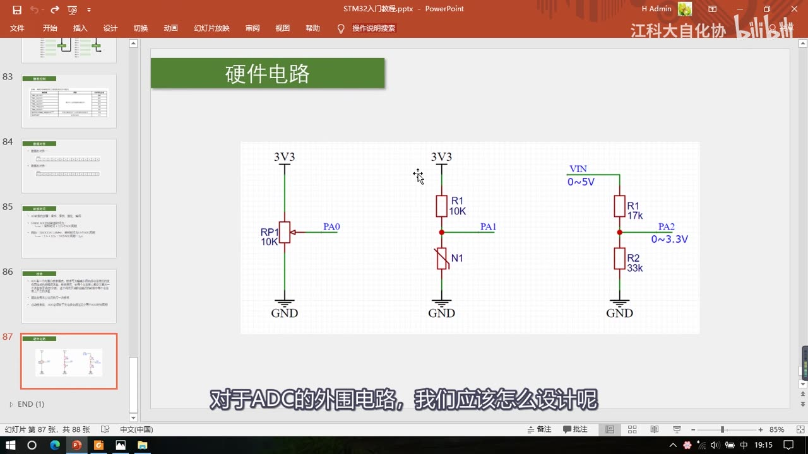
图 16：PPT「硬件电路」——三个电路：①3V3—RP1 10K—GND，滑动端输出 PA0；②3V3—R1 10K—N1（传感器）—GND，中点输出 PA1；③VIN 0～5V—R1 17k—节点（0～3.3V）→PA2—R2 33k—GND；字幕「对于ADC的外围电路，我们应该怎么设计呢」
11. 手册导读与下一集
- 本集内容对应手册的 11.3 ADC 功能描述 和 11.12 ADC 寄存器 等章节；
- 手册里有 ADC 中断表（表68）：规则组 EOC / EOCIE、注入组 JEOC / JEOCIE、模拟看门狗 AWD / AWDIE；
- 手册还列了所有 ADC 寄存器的地址与复位值——复位值对应的就是各个外设的默认配置（一般上电默认全为 0，也有不是全 0 的，可以自己找找看）；想了解上电后的默认配置，就参考这里的寄存器默认值、再对照寄存器描述；
- 片尾（48:42）：「我们下一小节来开始写代码」——代码在 P22 [7-2]（就是片头演示的
7-1 AD单通道和7-2 AD多通道）。
坑与易错点
- ADC 输入不能超出 VSSA～VDDA：范围是 0～3.3V，超了不仅测不准还可能损坏引脚——更高电压要先用电阻分压/隔离。
- 12 位结果最大是 4095 不是 4096：12 位即 2^12 = 4096 个刻度，最大值 2^12-1 = 4095，对应 3.3V。
- 换算关系是线性的：
电压 = AD 值 / 4095 × 3.3V；反过来AD 值 = 电压 / 3.3 × 4095。 - 本芯片只有 10 个外部通道：16 个外部通道是「这个系列最多」，C8T6 只有 ADC12_IN0～IN9（PA0～PB1），PC0～PC5 等没引出来。
- 通道 16/17 只有 ADC1 有：16 = 内部温度传感器、17 = 内部参考电压（约 1.2V），ADC2 没有。
- 规则组只有 1 个数据寄存器：多通道扫描会互相覆盖（只留最后一个），要么配 DMA 转运、要么及时读走；注入组有 4 个寄存器才不用担这个。
- ADCCLK 最大 14MHz：72MHz 下 2 分频 36M、4 分频 18M 都超限，只能 6 分频（12M）或 8 分频（9M）——超频能跑但不保证稳定。
- 转换时间要算采样时间：
TCONV = 采样时间 + 12.5 个 ADC 周期，不是固定 1us——1us 是「ADCCLK=14MHz、采样 1.5 周期」那个特定组合。 - 数据左对齐会让读数变大 16 倍：左对齐等于左移 4 位，直接读要除以 16；一般用右对齐直接读。
- 扫描模式必须给「通道数目」：不指定的话它会按 16 个位置全转，实际只用了前几个就会读到无效通道。
- 单次 vs 连续、扫描 vs 非扫描是两组独立参数：4 种组合对应 4 种模式，别混成一个「连续扫描模式」。
- 模拟看门狗是硬件窗口比较：超上下限自动申请中断，不等于「转换结果一定准确」；用它是为了省掉主循环里不断读值判断。
- 硬件电路分压电阻要选对量级：电位器/分压电阻太小耗电大、太大又容易被 ADC 输入阻抗影响；固定电阻尽量与传感器阻值相近。
- 本集没有代码：所有配置（
ADC_Cmd上电、校准、规则组序列、触发源选择、数据对齐、ADCCLK 分频）的写法都在 P22，本集只讲原理与参数。
时间轴
| 时间 | 内容 |
|---|---|
| 0:05 | 开场：继续 STM32 入门教程 |
| 0:09 | 这节课学习 STM32 的 ADC，模拟数字转换器 |
| 0:14 | 先看现象：本节有两个程序，AD 单通道、AD 多通道 |
| 0:24 | 先看第一个 AD 单通道 |
| 0:29 | 看面包板：接了一个电位器（滑动变阻器） |
| 0:35 | 电位器产生 0～3.3V 连续变化的模拟电压信号，接到 PA0 |
| 0:43 | 用内部 ADC 读取电压显示在屏幕上：第一行原始数据、第二行电压值 |
| 0:56 | 拧电位器：往左拧 AD 减小、电压减小，最小 0 对应 0V |
| 1:08 | 往右拧 AD 变大、电压也变大 |
| 1:12 | STM32 的 ADC 是 12 位的，最大值 4095（2^12-1），对应 3.3V |
| 1:24 | 现象看完：GPIO 只能读高低电平，只有两个值 |
| 1:33 | 用 ADC 可以对电平之间的电压量化成一个变量，相当于电压表 |
| 1:54 | 第二个程序：AD 多通道 |
| 2:05 | 又接了光敏电阻、热敏电阻、反射红外模块，AO 接 PA1/PA2/PA3 |
| 2:18 | 加上电位器共 4 个通道，显示 AD0～AD3 |
| 2:27 | 演示：电位器看 AD0，左拧减小右拧增大 |
| 2:41 | 遮挡光敏电阻：光线减小，AD1 增大；移开 AD 减小 |
| 2:52 | 手热热敏电阻：温度升高，AD2 减小；移开 AD 增大 |
| 3:06 | 手靠近反射红外：有反光，AD3 减小；移开 AD 增大 |
| 3:17 | 现象看完，回 PPT 看 ADC 简介 |
| 3:27 | ADC 全称 Analog to Digital Converter，模拟-数字转换器 |
| 3:38 | 可将引脚上连续变化的模拟电压转成内存中的数字变量，建立桥梁 |
| 3:49 | STM32 是数字电路只有高低电平，读电压就要借助 ADC |
| 4:04 | ADC 把电压转成数据存寄存器，读到变量里就能显示/判断/记录 |
| 4:22 | 反过来数字到模拟是 DAC；PWM 在大功率场合比 DAC 更好更常用 |
| 5:11 | DAC 现在主要用于波形生成（信号发生器、音频解码芯片） |
| 5:29 | STM32 ADC 是 12 位逐次逼近型、1us 转换时间 |
| 5:38 | 12 位表示范围 0～4095，位数越高量化越精细、分辨率越高 |
| 6:23 | 1us 对应转换频率 1MHz，是 STM32 ADC 最快转换频率 |
| 6:46 | 输入范围 0～3.3V、结果 0～4095，中间线性对应 |
| 7:26 | 18 个输入通道 = 16 个外部 + 2 个内部信号源 |
| 7:34 | 外部信号源就是 16 个 GPIO，引脚直接接模拟信号就能测电压 |
| 7:49 | 内部信号源：内部温度传感器可测 CPU 温度 |
| 7:58 | 内部参考电压 VREFINT 约 1.2V，不随供电变化，可用于校正 |
| 8:18 | 规则组和注入组两个转换单元：列一个组、一次启动、连续转换多个值 |
| 8:20 | 规则组用于常规使用、注入组用于突发事件 |
| 8:38 | 模拟看门狗自动监测范围，超阈值申请中断，省掉手动 if 判断 |
| 9:13 | C8T6 的 ADC 资源：ADC1、ADC2 两个外设 |
| 9:24 | 系列最多 16 个外部信号源，本芯片引脚少只有 10 个外部通道 |
| 9:50 | 想要更多通道可选引脚更多的型号，具体看数据手册 |
| 10:03 | 简介讲完，看逐次逼近型 ADC 的内部结构 |
| 10:22 | 逐次逼近型 ADC 内部结构（ADC0809），原理与 STM32 一样 |
| 10:36 | 以前单片机性能不强，需要外挂 ADC 芯片 |
| 10:55 | 现在很多单片机内部集成 ADC，引脚直接测电压 |
| 11:06 | 结构：左边 IN0～IN7 是 8 路输入通道，经通道选择开关选一路 |
| 11:21 | 地址锁存和译码：通道号放在 ADDA/ADDB/ADDC 上，ALE 锁存 |
| 11:41 | 相当于可通过模拟信号的数据选择器；转换快，只需一个 AD 转换器加多路开关 |
| 12:07 | ADC0809 有 8 个输入通道，STM32 有 18 个 → 18 路多路开关 |
| 12:21 | 输入选好后，用逐次逼近的方法一一比较 |
| 12:28 | 电压比较器判断两个输入电压的大小关系 |
| 12:40 | 比较器一端是待测电压，另一端是 DAC 输出 |
| 12:47 | DAC 给数据就输出对应电压（内部用加权电阻网络） |
| 13:04 | 有了未知编码电压和已知编码电压，就可以比较 |
| 13:16 | DAC 输出小就增大数据，直到两者近似相等，数据就是编码 |
| 13:36 | 这个调节过程由逐次逼近寄存器 SAR 完成（红圈比较器与 DAC） |
| 13:46 | 8 位 ADC 编码 0～255，第一次给 255 的一半 128 比较 |
| 14:10 | 大了就减半试 64、32……依次进行，最快找到编码 |
| 14:26 | 128、64、32 正好是二进制位权 → 从高位到低位判断 1 还是 0 |
| 14:47 | 这就是逐次逼近名字的来源；12 位 ADC 需要判断 12 次 |
| 15:06 | 输出 8 位 8 根线、12 位 12 根线；EOC 结束、START 开始、CLOCK 推动 |
| 15:30 | VREF+/VREF- 是 DAC 参考电压，也决定了 ADC 的输入范围 |
| 15:48 | VCC/GND 供电，通常参考电压正极接 VCC、负极接 GND |
| 16:08 | 逐次逼近型 ADC 了解差不多，看 STM32 的 ADC |
| 16:24 | STM32 ADC 框图（手册图24），这个结构图很重要要多看 |
| 16:40 | 18 路输入 → 模拟多路开关 → 模数转换器 |
| 17:04 | 结果放数据寄存器；规则组最多 16 通道、注入组最多 4 通道 |
| 17:30 | 类比点菜：普通 ADC 一次一个菜，这里可以递菜单 |
| 18:00 | 规则组只有 1 个数据寄存器，16 个菜会被覆盖，需 DMA 挪走 |
| 18:50 | 注入组像 VIP 座位，有 4 个数据寄存器，不用担心覆盖 |
| 19:24 | 红圈：注入数据寄存器 4×16 位、规则数据寄存器 16 位 |
| 19:50 | 一般用规则组就够，配 DMA 转运；后面只讲规则组 |
| 20:00 | 触发转换：START，软件触发 + 硬件触发（定时器等） |
| 20:45 | 用定时器每隔 1ms 触发比进中断手动开始更好，不占中断资源 |
| 21:36 | TIM3 定 1ms、更新事件选 TRGO 输出，用来触发 ADC |
| 22:04 | VREF+/VREF-、VDDA/VSSA：本芯片内部已接，输入范围 0～3.3V |
| 22:53 | ADCCLK 来自 ADC 预分频器，预分频器来源于 RCC |
| 23:12 | APB2 72MHz → ADC 预分频 → ADCCLK，最大 14MHz |
| 23:24 | 分频可选 2/4/6/8：2 分频 36M、4 分频 18M 超限，只能 6 分频 12M 或 8 分频 9M |
| 23:48 | 时钟树红圈：ADC 预分频 /2,/4,/6,/8 → ADCCLK 最大 14MHz |
| 24:10 | DMA 请求用于数据转运，下一节讲 |
| 24:32 | 两个数据寄存器；模拟看门狗有阈值高限/低限，超范围申请中断 |
| 24:55 | EOC（规则组）和 JEOC（注入组）置标志位，也可申请中断 |
| 25:12 | 框图讲完，看总结的 ADC 基本结构图 |
| 25:24 | 基本结构：16 GPIO + 温度 + VREFINT → 多路开关 → 规则组/注入组 → 数据寄存器 |
| 25:44 | 触发控制 START、RCC 时钟、模拟看门狗→NVIC、EOC、开关控制 |
| 26:08 | STM32 ADC 内部结构讲完 |
| 26:48 | 输入通道：16 个外部通道对应哪些 GPIO，看表 |
| 27:00 | 引脚定义表：ADC12_IN0 是 PA0，IN1～IN9 依次对应 PA1～PB1 |
| 27:30 | 只有 IN0～IN9 共 10 个通道，本芯片只有 10 个外部输入通道 |
| 27:56 | ADC12_IN 表示 ADC1 和 ADC2 引脚完全相同 |
| 28:15 | 双 ADC 模式：同步/交叉模式，交叉可提高采样率（了解即可） |
| 28:40 | 也可以分开使用，分别对不同引脚采样 |
| 29:00 | 通道 0～17 共 18 个；16=温度、17=内部参考电压，只有 ADC1 有 |
| 29:36 | 通道表 ADC1/ADC2/ADC3 三列，本芯片无 ADC3、无 PC0～PC5 |
| 30:12 | 规则组 4 种转换模式：单次/连续 × 非扫描/扫描 |
| 30:31 | 结构体两个参数组合出 4 种转换方式 |
| 30:45 | 单次非扫描：序列 1 填一个通道，触发一次转一次，EOC 后读 DR |
| 31:00 | 想换通道就在转换前改序列 1 |
| 31:30 | 连续非扫描：转换结束不停，触发一次后一直转，直接读 DR 即最新值 |
| 31:56 | 单次扫描：序列可填多个通道（可重复），还要给「通道数目」 |
| 32:12 | 例：通道数目=7，序列为通道 2/5/4/1/0/3/6，一次触发依次转换，全完才 EOC |
| 32:50 | 需要 DMA 及时把结果挪走，防止数据被覆盖 |
| 33:24 | 连续扫描：一次转换完成后立刻开始下一轮 |
| 33:51 | 间断模式：每几个通道暂停、需再次触发（了解即可） |
| 34:20 | 触发控制：表64 规则组触发源 |
| 34:36 | 有来自定时器的信号、引脚或定时器的信号（需 AFIO 重映射）、软件触发 |
| 34:50 | 具体选哪个触发源，设置右边寄存器就行，库函数给参数 |
| 35:03 | 数据对齐：数据寄存器 16 位，12 位结果存在对齐问题 |
| 35:16 | 右对齐：12 位靠右、高位补 0，直接读就是结果 |
| 35:26 | 左对齐：左移 4 位（×16），取高 8 位可退化成 8 位 ADC；一般用右对齐 |
| 36:48 | 转换时间：步骤=采样、保持、量化、编码 |
| 37:00 | TCONV = 采样时间 + 12.5 个 ADC 周期 |
| 37:20 | 例：ADCCLK=14MHz、采样 1.5 周期 → (1.5+12.5)/14M = 1us |
| 37:40 | 采样时间越长越抗毛刺但更慢；ADCCLK 超 14M 属超频不保证稳定 |
| 38:20 | 采样保持电路：采样开关+电容，量化期间电压保持不变 |
| 40:00 | 校准：内置自校准减小电容组误差，建议每次上电后执行一次 |
| 40:20 | 启动校准前 ADC 必须关电至少两个 ADC 时钟周期 |
| 40:48 | 硬件电路：ADC 的外围电路怎么设计 |
| 41:00 | ①电位器 10K 两端接 3V3/GND，滑动端输出 0～3.3V 接 PA0 |
| 41:40 | 电位器阻值别太小，至少 KΩ 级（例 10K），否则耗电大发热 |
| 42:10 | ②传感器等效可变电阻 + 固定电阻 R1=10K 分压，中点接 PA1 |
| 42:40 | 传感器阻值小输出低、阻值大输出高；固定电阻取与传感器相近的值 |
| 43:10 | 两者位置互换则输出极性相反 |
| 43:40 | ③VIN 0～5V 经 R1=17k、R2=33k 分压 → PA2 得 0～3.3V |
| 44:10 | 电压再高要用隔离，不能直接分压进 ADC |
| 44:40 | 硬件电路讲完，看手册 |
| 45:46 | 手册：11.3 ADC 功能描述、11.12 ADC 寄存器 |
| 46:36 | 表68 ADC 中断：EOC/EOCIE、JEOC/JEOCIE、AWD/AWDIE |
| 48:05 | 寄存器总表与复位值，可用来了解上电默认配置 |
| 48:42 | 结尾：下一小节开始写代码 |
存疑
- 本集文本来自画面硬字幕的 OCR（PP-OCRv4，source=subtitle-ocr，814 段），不是 ASR。Keil 输出（
Flash Load finished at ...、Application running）与手册正文/页码（273/754、ololo…、20 SDIO接口等）反复混入，这些不是老师口述内容；另有行首噪声（厂、」、一1、门、1m等）。典型 OCR 错字（本集实际出现）：扫描→ 「招描」、阈值→ 「阔值/國值」、ADCCLK→ 「ADCCUK」、TCONV→ 「TcoNv」、引脚→ 「引I脚」、1us→ 「1uS」、2^12-1→ 「2412-1」，已按画面和上下文校正。 - 本集没有任何代码：全程没有出现初始化结构体、库函数、寄存器写入的演示；
ADC_InitTypeDef等结构体/配置步骤本集没有出现，ADC_Cmd只在 26:35 被口述提了一句「在库函数中就是 ADCCmd 函数，用于给 ADC 上电」（没有代码画面）。本笔记因此不写配置步骤与函数名，相关写法统一注明「在 P22 [7-2]」。 - 「12.5 个 ADC 周期」里的 0.5 周期：老师只说「可能是做其他一些东西花的时间」，没有权威解释；本笔记按口述写，未自行推断。
- ADCCLK 的 12MHz / 9MHz 是口述推算：画面时钟树只标了「ADCCLK 最大 14MHz」和预分频 /2、/4、/6、/8；「2 分频 36M、4 分频 18M 超限，只能 6 分频 12M 或 8 分频 9M」是按 72MHz 主频口述推算的。
- 注入组触发源表（JEXTSEL）本集只扫了一眼：老师主要讲规则组的表64，注入组的触发表只是提了一下「上面那些是注入组的触发源」，没有逐条展开。
- 双 ADC 模式、间断模式：老师明确说「比较复杂，只简单介绍、不需要掌握」，PPT 也没画间断模式图，本笔记只各用一两句话带过。
- 转换模式 PPT 只完整画了 4 张图：单次非扫描、连续非扫描、单次扫描、连续扫描各一页；连续非扫描和连续扫描页没有逐项口述细节。
- 片尾没有提纲：只说「下一小节来开始写代码」，没有说明下一节具体写哪几个程序；结合片头现象可推断是
7-1 AD单通道+7-2 AD多通道（代码在 P22）。 - 手册导读部分 OCR 污染最重（45:46–48:46）：大量手册正文、寄存器表、页码识别错误混在字幕里，笔记只取「表68 中断」「寄存器复位值」这两个能确认的点。
- 本集没有示波器/波形实测：片头现象全是 OLED 数值 + 口述（AD 值随环境变化），没有电压波形测量。